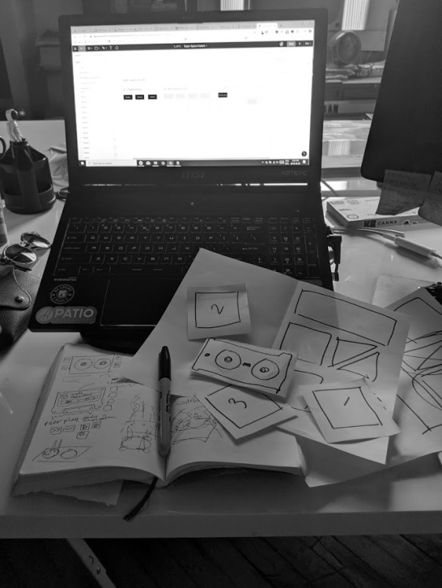
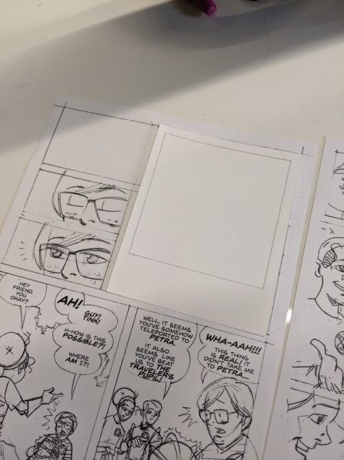
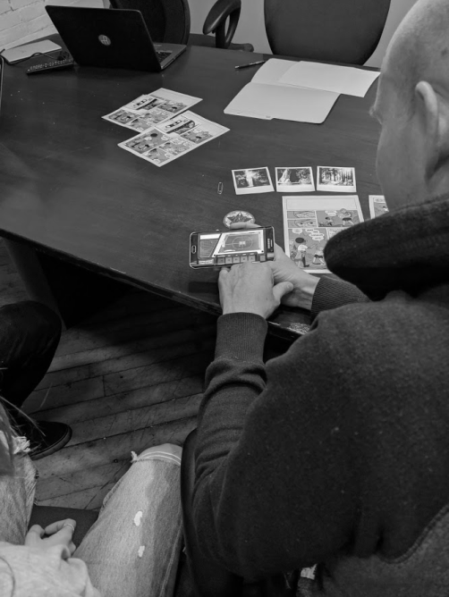
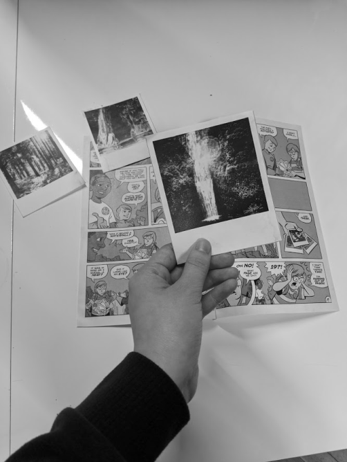
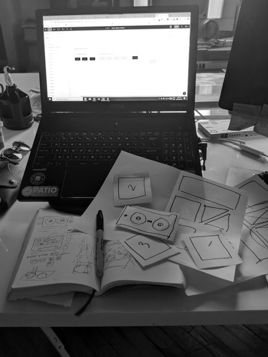
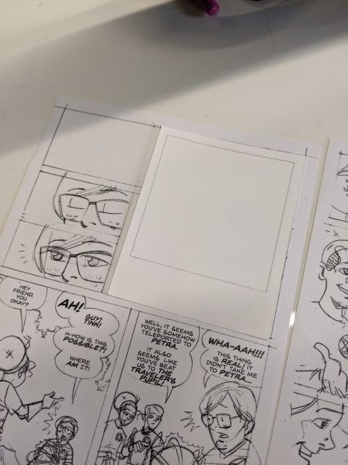
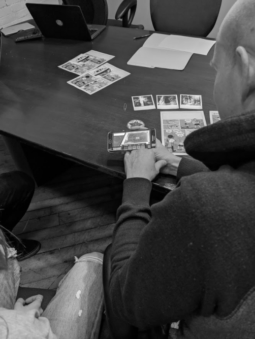
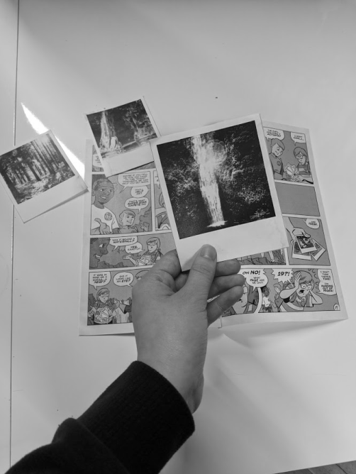

Context
I was a big fan of The Mandalorian season 1 but season 2? Well, it got a bit too fan service-y and lost a lot of its Western cowboy-samurai vibes and exploration of a darker Star Wars narrative. Here is my rewrite of season 2 broken down up to episode 4.
Episode 1: The Search
The Mandalorian has been tasked with returning the Child to its people, the Jedi. He begins searching for other Guild leaders on recommendation by Greef Karga for higher bounties, ones of which may know of who the Jedi were. His first lead, formerly Imperial planet, Aloxor, is well-known for its criminal activities and his contact is Guild Leader, Randolf. He meets Randolf where in exchange for a special vial at an ex-Imperial laboratory he will tell him what he knows about the Jedi. At the lab, he discovers the base is being used to conduct experiments on local criminals, explaining why crime rates in town have been so low, with a vial containing something called an M-count. Stealthily, the Mandalorian retrieves a sample of one of the vials but notices the Child whimpering. He decides to investigate the laboratory further but is seen by patrolling guards. He quickly escapes the laboratory and returns to Randolf to exchange. On his way, he discovers that Randolf and his guild are dead. Murdered by lasers, he suspects the work of Imperial troops and Randolf knowing too much. Looking at the vial in his hand, the Mandalorian walks away to his ship.
Role:
Developer
What I did:
- Implemented the app, used conjointly with a badge, polaroid pictures, and comic book, that allowed users to unlock hidden AR interactions by scanning over objects to solve the game.
- Developed a singleton model for an audio maze minigame that handled events based on a cassette player controls where playing certain timed sequences returned a clue used to solve the game.
- Scaled and added UI elements, videos, sound effects, and animations to scenes and models that enhanced the overall experience to be more engaging.
- Added a save/load system and a reset function for replayablility.
- Performed extensive user testing and quality assurance to device scaling and model game states.
- Used Unity framework Vuforia for image targets on the badge, polaroid pictures, and comic book.
- Published the app to the App Store and Google Play.
 >




>



